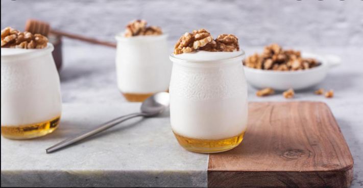
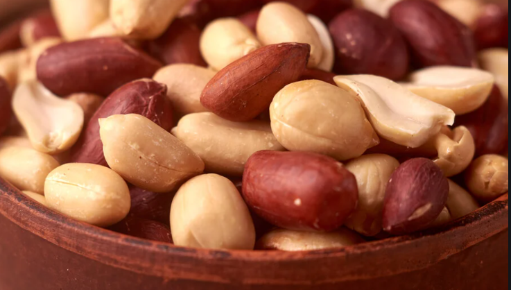
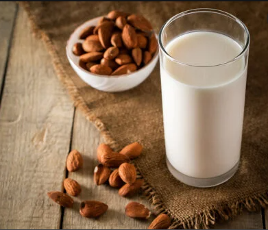

NUECES: Aportan numerosos minerales como potasio, que facilita el desarrollo muscular, zinc, que interviene en el sistema nervioso, magnesio y fósforo

YOGUR: Contiene proteínas muy útiles para el ser humano y con una mayor digestibilidad que la leche. Además, es una buena fuente de vitaminas del grupo B y A y una excelente fuente de minerales como el calcio, fósforo, magnesio y zinc
CASTAÑAS: Gran fuente de hidratos de carbono de calidad, saciantes y ricas en fibra, con bajo contenido en azúcares, proporcionando así una buena fuente de energía saludable.

MANI: Es fuente de proteínas y ácido fólico, una vitamina que sirve para producir células nuevas. Fortalece el sistema inmune

LECHE: Es una fuente de fósforo, potasio, riboflavina, vitamina B12, y contiene varias otras vitaminas